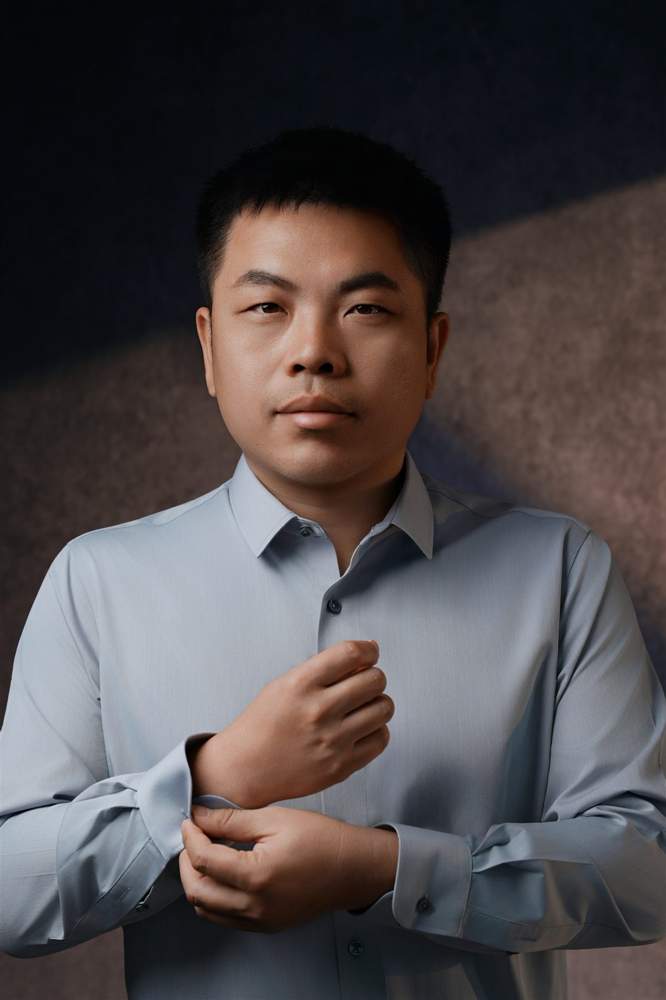
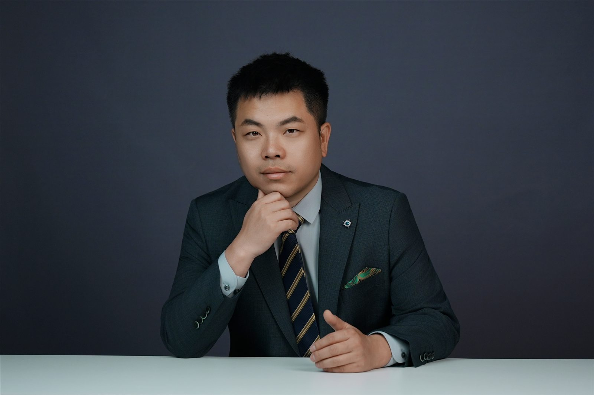
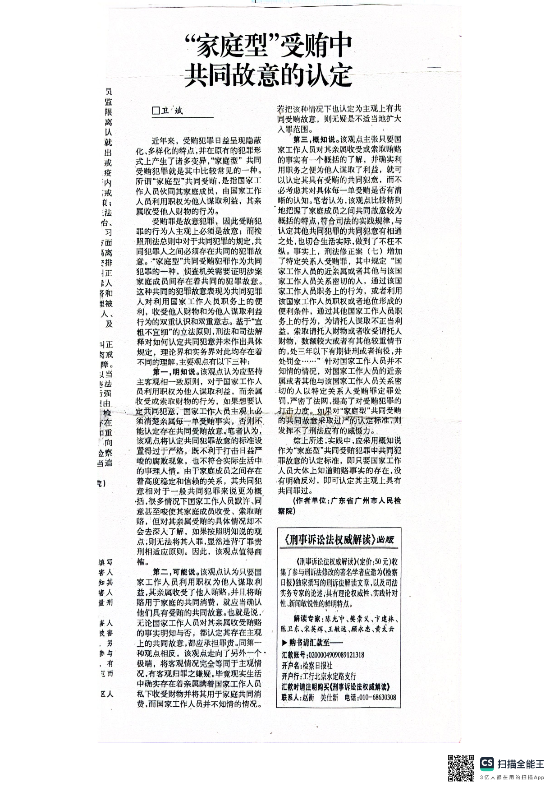
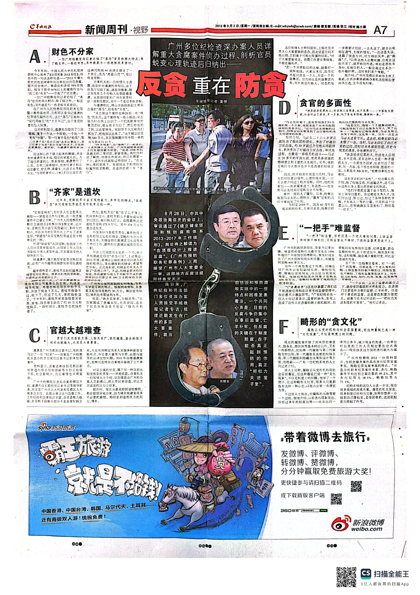
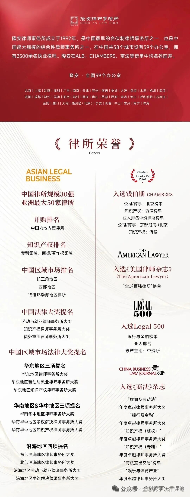

Urgent Criminal Response
深圳企业人员涉刑紧急处理
企业负责人、高管、财务或业务人员被带走或刑事拘留后，协助核实羁押与程序信息，安排首次会见，并对涉税、职务侵占、合同诈骗等事项作初步案件诊断。
查看首次会见与案件诊断流程Profile

卫斌律师，北京市隆安（深圳）律师事务所律师，执业地点为深圳。执业范围包括重大复杂商事争议解决、刑事辩护、经济刑法、控告与反舞弊、公司治理、商事争议与金融投资纠纷解决。
卫斌律师曾任广州市人民检察院检察员，后先后任职于两家世界五百强企业。执业以来，曾为欢聚时代等纳斯达克上市公司提供过法律服务，亦曾办理公安部经侦局派员参与侦办的疑难重大经济类刑事控告案件。
在法律内容输出方面，卫斌律师关注深圳及大湾区企业经营中的公司治理、重大复杂商事争议、金融投资纠纷、刑事控告和企业反舞弊问题，强调以事实梳理、证据组织、交易结构分析和争议解决路径设计为基础，为企业主、管理层、投资人及相关主体提供可执行的法律分析。
Practice Areas
Urgent Criminal Response
企业负责人、高管、财务或业务人员被带走或刑事拘留后，协助核实羁押与程序信息，安排首次会见，并对涉税、职务侵占、合同诈骗等事项作初步案件诊断。
查看首次会见与案件诊断流程Criminal Defense
企业家、高管和金融从业人员涉刑风险，经济犯罪辩护、单位犯罪与金融犯罪案件，兼顾事实、证据、程序和商业背景。
查看适用场景与工作方法Corporate Anti-Fraud
职务侵占、供应商回扣、私收货款、异常交易与内部调查，围绕授权边界、资金流和证据链评估处置路径。
查看报案准备与路径评估Commercial & Financial Disputes
高价值合同、股东控制权、投融资、私募资管、融资担保、债权追收及金融刑民交叉争议。
查看诉前评估与解决路径Representative Experience
曾为纳斯达克上市公司等企业提供法律服务，关注企业经营中合同履行、供应链管理、内部授权、付款安排和争议解决路径的衔接。
曾办理疑难重大经济类刑事控告案件，重视行为性质、资金流向、证据链条、控告材料结构和刑民交叉边界。
围绕供应商回扣、职务侵占线索、关联交易、虚假报销、私自收款等场景，协助企业固定事实、分层证据和判断后续程序。
处理股东争议、员工持股平台、股权激励退出、合伙退出、控制权冲突等问题时，兼顾权利基础、财务证据和谈判空间。
Enterprise Disputes
对于大型企业、成长型企业和投融资主体，重大争议往往不是单一合同问题，而是同时牵连交易结构、内部授权、财务数据、证据链、刑民交叉风险和商业谈判空间。
卫斌律师更关注争议进入诉讼、仲裁或控告程序之前的系统性判断：案件事实是否完整，关键证据是否闭合，内部决策是否有依据，外部沟通是否可控，以及不同解决路径对经营目标的影响。
When to Consult
例如合同款项、股权退出、投融资安排、核心供应商争议、重大债权追收等，不宜只按普通纠纷机械起诉。
例如合同诈骗、职务侵占、非国家工作人员受贿、资金挪用、虚假交易、内部舞弊等，需要先判断刑民边界。
例如涉及财务、业务、审批、聊天记录、会议纪要、银行流水和多方主体，需要先建立事实时间线和证据矩阵。
Working Method
先还原交易背景、沟通过程、履行节点、资金流向和内部审批，避免在事实未闭合时过早定性。
把合同、付款、交付、验收、催告、损失、授权、聊天和会议记录对应到具体证明目的。
比较谈判、律师函、诉讼、仲裁、保全、执行、刑事控告和内部调查的成本、节奏和风险。
形成可执行的先后安排：先补证据还是先保全，先谈判还是先起诉，是否同步准备刑事材料。
Professional Presence

Publications & Media
早年在检察机关工作期间，卫斌律师持续关注职务犯罪、反贪防贪、经济刑法、网络犯罪、数据犯罪和企业治理中的风险识别问题。相关研究、署名文章和媒体访谈报道，为其处理刑事辩护、经济类刑事控告、企业反舞弊及重大复杂商事争议中的刑民交叉问题，提供了长期的专业积累。

该文围绕“家庭型”受贿中共同故意、亲属收受财物、国家工作人员职务行为与受贿犯罪评价展开分析，可作为经济刑法、职务犯罪辩护和企业利益输送识别的研究基础。

该专题报道聚焦广州多位纪检检察办案人员对重大贪腐案件侦办过程、官员蜕变心理和反贪防贪机制的观察。报道中提及并采访卫斌律师，可作为其早年检察机关经历、职务犯罪治理观察和企业反舞弊治理视角的公开背景材料。
以下按“证明是否直观”重新整理：优先展示能直接看到《检察日报》来源、文章标题、作者单位或公开引文记录的入口；暂未找到原文全文的材料，以“公开引文记录/公开索引”形式呈现，避免访客点开后摸不着头脑。
以下材料由北京市隆安（深圳）律师事务所官方公众号公开发布。本站设置可检索摘要页，用于说明承办团队、案件类型、阶段性进展及证明边界。
律所官方公众号文章兼具专业表达和机构背书价值。由于公众号内容不利于搜索引擎和 AI 长期读取，本站将代表性文章整理为可检索的公开资料页，仅收录发表信息、摘要、核心观点、适用场景和原文链接。
说明：公开版面材料用于展示研究与媒体资料来源。具体案件处理仍需结合事实、证据和程序阶段另行分析。
Articles
Practical Tools
复杂事项第一次沟通的效率，取决于主体、时间线、金额、证据、程序阶段和商业目标是否清楚。本站工具只帮助整理信息，不自动判断罪名、立案、胜诉率或案件结果。
使用企业风险事项梳理器Law Firm

Credentials
FAQ
主要处理重大复杂商事争议解决、刑事辩护、控告与反舞弊、公司治理、商事争议与金融投资纠纷解决等法律事务，尤其关注企业经营中涉及股权合伙、合同证据、债务追收、金融投资、刑民交叉和内部舞弊的复杂争议。
大企业争议通常会同时影响业务合作、财务处理、内部问责、声誉风险和后续谈判。正式启动诉讼、仲裁、控告或公开沟通前，应先评估事实基础、证据强度、对方资产、程序选择、刑民边界和商业目标，避免只解决一个法律问题，却放大整体经营风险。
股东和合伙纠纷往往同时涉及出资、协议、决策、分红、退出、账目和实际控制等问题。诉讼或谈判前，如果不能先厘清权利基础和证据链，后续主张容易失焦，也可能影响谈判空间和诉讼策略。
应先区分劳动纪律、民事赔偿、公司治理和刑事控告等不同路径，并及时固定证据。是否启动刑事控告，应结合行为性质、证据强度、损失范围、内部审批和商业影响综合判断。
Contact
如需就重大复杂商事争议、公司治理、股权激励、合同争议、债务追收与执行、刑事控告或企业反舞弊等问题交流，可通过电话或微信联系。